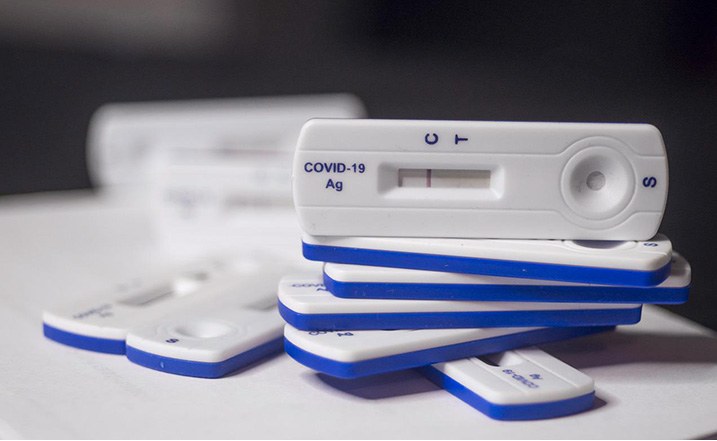

home>사업분야>진단사업
진단사업
인류 건강 증진을 위한 동아ST의 진단서비스
Diagnosis
동아ST 진단사업부는
조기진단을 위한
앞선 서비스를 제공합니다.
동아ST 진단사업부는 의료 분야의 전문화를 통한
국민 건강 향상을 목적으로 1984년 설립되었습니다.
설립된 이후 자사 연구소와의 연계를 통한 국내 최초의 E.I.A. B형 간염 진단 시약을 개발하였으며, 이후 AISDIA 1/2, 동아 HCV, 동아 HBsAg, 동아 Anti HBs, 동아 Syphilis 등 지속적으로 진단 제품의 국산화를 위하여 노력하였으며,
Thermo Fisher Scientific, BD 등 해외 우수 진단 업체의 진단용 제품 소개를 통하여 질병의 정확한 조기 진단을 위하여 이바지하고 있습니다.
수상내역

세계 1위의 기술력으로 진단시약 미래를 열어가겠습니다.
자사 연구소와 연계하여 일찍부터 국산 시약 개발에 주력하여 유전자 재조합 기술을 이용 각종 임상병리 검사용 진단 시약 개발에 성공하였으며 그 우수성을 인정받아 각종 수상 경력을 가지고 있습니다.
| 수상년도 | 수상제품 | 수상내역 |
|---|---|---|
| 1991년 | 에이즈 진단시약 | 장영실상 수상 |
| 1994년 | 에이즈 진단시약 | 장영실상 수상 |
| 1995년 | 에이즈디아 원/투 | 장영실상 수상 |
| 1998년 | 동아 HCV 3.2 | 특허 대전 특허청장상 수여 |
| 산/학/연 협동상 수상 | ||
| 1999년 | 동아 시필리스 | 국산 신기술(KT) 수상 |
| 동아 HMPAO |